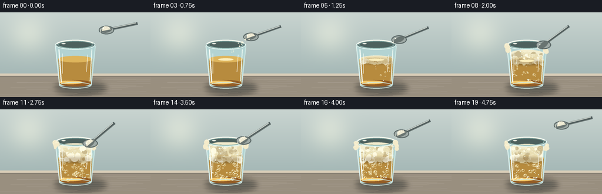
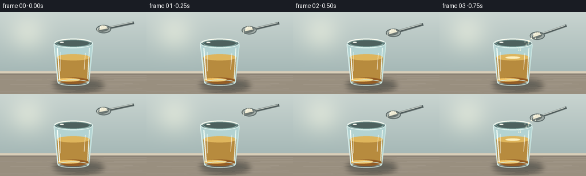
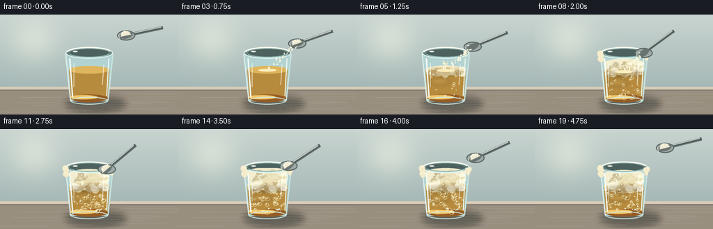
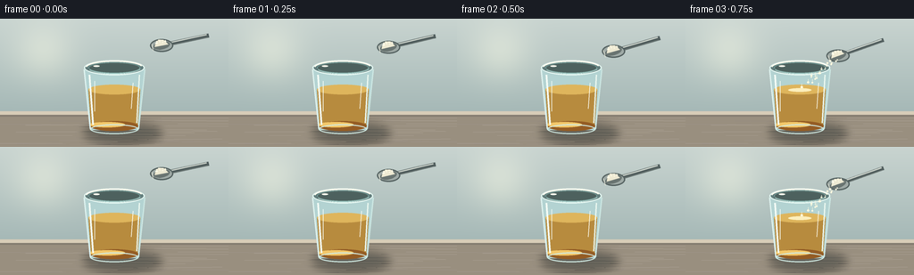

CODING AGENTS AS PIXEL WORLD MODELS
traex/DeepSeek-V4.1-Flash · material_0034
点击播放 · 原生 RGB 像素
逐轮保存的候选
回放视频、检查图与代码变化。
每份候选均可单独播放。实际图片检查记录在下方工具轨迹中。
候选 01播放与检查图
点击播放 · 原生 RGB 像素


展开代码变化
--- 上一保存版本
+++ 本次保存版本
@@ -0,0 +1,423 @@
+"""Procedural timelapse: bicarbonate added to a glass of vinegar."""
+
+from __future__ import annotations
+
+import math
+from pathlib import Path
+
+import numpy as np
+from PIL import Image, ImageDraw, ImageFilter
+
+from artifact_io import save
+
+
+W, H = 256, 144
+N, FPS = 20, 4.0
+SS = 4 # Render at 4x and downsample for clean edges.
+
+
+def sc(value: float) -> int:
+ return int(round(value * SS))
+
+
+def box(cx: float, cy: float, rx: float, ry: float) -> tuple[int, int, int, int]:
+ return (sc(cx - rx), sc(cy - ry), sc(cx + rx), sc(cy + ry))
+
+
+def clamp01(value: float) -> float:
+ return max(0.0, min(1.0, value))
+
+
+def smoothstep(a: float, b: float, value: float) -> float:
+ if a == b:
+ return float(value >= b)
+ u = clamp01((value - a) / (b - a))
+ return u * u * (3.0 - 2.0 * u)
+
+
+def ease_out(value: float) -> float:
+ value = clamp01(value)
+ return 1.0 - (1.0 - value) ** 3
+
+
+def rgba(color: tuple[int, int, int], alpha: int = 255) -> tuple[int, int, int, int]:
+ return (*color, alpha)
+
+
+def gradient_background() -> Image.Image:
+ """Soft, warm side-lit wall with a faint window reflection."""
+ yy = np.broadcast_to(
+ np.linspace(0.0, 1.0, H * SS, dtype=np.float32)[:, None],
+ (H * SS, W * SS),
+ )
+ xx = np.broadcast_to(
+ np.linspace(0.0, 1.0, W * SS, dtype=np.float32)[None, :],
+ (H * SS, W * SS),
+ )
+ top = np.array([198, 210, 207], dtype=np.float32)
+ bottom = np.array([155, 176, 174], dtype=np.float32)
+ color = top[None, None, :] * (1.0 - yy[..., None]) + bottom[None, None, :] * yy[..., None]
+
+ # A broad, diffuse window light on the left keeps the glass silhouette legible.
+ window = np.exp(-(((xx - 0.19) / 0.19) ** 2 + ((yy - 0.27) / 0.32) ** 2) * 2.0)
+ color += window[..., None] * np.array([25.0, 20.0, 13.0], dtype=np.float32)
+ color += (0.5 - yy[..., None]) * np.array([5.0, 4.0, 2.0], dtype=np.float32)
+ color = np.clip(color, 0, 255).astype(np.uint8)
+ return Image.fromarray(color, "RGB").convert("RGBA")
+
+
+def draw_table(image: Image.Image) -> None:
+ draw = ImageDraw.Draw(image, "RGBA")
+ # A quiet, pale stone counter, with a darker front edge for depth.
+ draw.rectangle((0, sc(104), image.width, image.height), fill=rgba((171, 158, 139), 255))
+ draw.rectangle((0, sc(104), image.width, sc(109)), fill=rgba((216, 205, 184), 255))
+ draw.rectangle((0, sc(108), image.width, sc(110)), fill=rgba((132, 124, 112), 115))
+ draw.rectangle((0, sc(110), image.width, image.height), fill=rgba((153, 143, 127), 255))
+
+ rng = np.random.default_rng(1931)
+ for _ in range(34):
+ y = 111 + rng.random() * 31
+ x0 = rng.random() * 250 - 30
+ length = 30 + rng.random() * 120
+ shade = int(145 + rng.random() * 45)
+ draw.line(
+ (sc(x0), sc(y), sc(x0 + length), sc(y + rng.uniform(-0.8, 0.8))),
+ fill=rgba((shade, shade - 10, shade - 20), int(20 + rng.random() * 35)),
+ width=max(1, sc(0.35)),
+ )
+
+ # Soft contact shadow under the tumbler.
+ shadow = Image.new("RGBA", image.size, (0, 0, 0, 0))
+ sd = ImageDraw.Draw(shadow)
+ sd.ellipse(box(137, 128, 43, 10), fill=rgba((45, 52, 51), 120))
+ shadow = shadow.filter(ImageFilter.GaussianBlur(sc(4.5)))
+ image.alpha_composite(shadow)
+
+
+def draw_cup_back(image: Image.Image, liquid_y: float, glass_tint: float) -> None:
+ draw = ImageDraw.Draw(image, "RGBA")
+ # Glass body and the darker far wall seen through the empty top of the tumbler.
+ body = [(94, 55), (162, 55), (155, 125), (101, 125)]
+ draw.polygon([(sc(x), sc(y)) for x, y in body], fill=rgba((179, 211, 210), 32))
+ draw.ellipse(box(128, 55, 34, 8.5), fill=rgba((98, 125, 124), 45))
+ draw.ellipse(box(128, 56, 29, 6.4), fill=rgba((77, 97, 94), 95))
+
+ # Vinegar is a translucent amber body with a slightly denser base.
+ liquid_poly = [(99, liquid_y), (157, liquid_y), (154, 122), (102, 122)]
+ draw.polygon(
+ [(sc(x), sc(y)) for x, y in liquid_poly],
+ fill=rgba((183, 139, 62), int(78 + 25 * glass_tint)),
+ )
+ draw.ellipse(
+ box(128, liquid_y, 29, 5.5),
+ fill=rgba((222, 181, 92), 92),
+ )
+ draw.ellipse(
+ box(128, 120.5, 27, 5.5),
+ fill=rgba((148, 92, 36), 118),
+ )
+ # A faint internal caustic near the bottom.
+ draw.ellipse(box(120, 119, 20, 3), fill=rgba((243, 199, 105), 46))
+
+
+def draw_liquid_bubbles(
+ image: Image.Image,
+ frame: int,
+ reaction: float,
+ liquid_y: float,
+) -> None:
+ if reaction <= 0.02:
+ return
+ draw = ImageDraw.Draw(image, "RGBA")
+ rng = np.random.default_rng(840 + frame)
+ count = int(2 + 44 * reaction)
+ for i in range(count):
+ phase = rng.random()
+ x = 104 + rng.random() * 48
+ y_span = max(2.0, 121.0 - liquid_y)
+ y = 121.0 - ((phase + frame * (0.10 + 0.12 * rng.random())) % 1.0) * y_span
+ r = 0.65 + rng.random() * (1.1 + 1.6 * reaction)
+ alpha = int(85 + 100 * reaction)
+ draw.ellipse(box(x, y, r, r * 0.82), outline=rgba((249, 240, 192), alpha), width=max(1, sc(0.45)))
+ if r > 1.25:
+ draw.ellipse(box(x - r * 0.28, y - r * 0.35, r * 0.26, r * 0.22), fill=rgba((255, 252, 226), 190))
+
+
+def make_foam_layer(
+ foam_top: float,
+ liquid_y: float,
+ reaction: float,
+ frame: int,
+ settle: float,
+) -> Image.Image:
+ layer = Image.new("RGBA", (W * SS, H * SS), (0, 0, 0, 0))
+ draw = ImageDraw.Draw(layer, "RGBA")
+ if reaction <= 0.015:
+ return layer
+
+ # A soft cream base makes the foam read as a continuous head rather than dots.
+ top = foam_top
+ base_alpha = int(120 + 115 * reaction)
+ draw.ellipse(box(128, top + 2.0, 29.5, 7.0), fill=rgba((247, 239, 207), base_alpha))
+ draw.polygon(
+ [(sc(100), sc(top + 2)), (sc(156), sc(top + 2)), (sc(154), sc(liquid_y + 5)), (sc(102), sc(liquid_y + 5))],
+ fill=rgba((248, 239, 207), int(90 + 75 * reaction)),
+ )
+
+ rng = np.random.default_rng(2607 + frame)
+ n_blobs = int(34 + 58 * reaction)
+ for i in range(n_blobs):
+ # Bias blobs toward the crest, where the foam should look tallest.
+ y_frac = rng.random() ** 0.78
+ y = top + 2.5 + y_frac * max(4.0, liquid_y - top + 1.5)
+ x = 128 + (rng.random() - 0.5) * (52.0 + 5.0 * math.sin(i * 0.7 + frame))
+ rx = 1.4 + rng.random() * 4.8
+ ry = rx * (0.65 + rng.random() * 0.55)
+ if rng.random() < 0.22:
+ fill = rgba((255, 250, 225), int(170 + 65 * reaction))
+ elif rng.random() < 0.56:
+ fill = rgba((235, 222, 178), int(125 + 75 * reaction))
+ else:
+ fill = rgba((204, 184, 137), int(80 + 70 * reaction))
+ draw.ellipse(box(x, y, rx, ry), fill=fill)
+ if rx > 2.0 and rng.random() < 0.68:
+ draw.arc(
+ box(x, y, rx * 0.85, ry * 0.85),
+ 205,
+ 335,
+ fill=rgba((255, 253, 232), 185),
+ width=max(1, sc(0.55)),
+ )
+
+ # Small surface bubbles and a few broken rings make the reaction feel active.
+ for i in range(int(6 + 28 * reaction)):
+ x = 105 + rng.random() * 46
+ y = top + 1.0 + rng.random() * max(2.0, liquid_y - top + 5.0)
+ r = 0.7 + rng.random() * 2.4
+ draw.ellipse(box(x, y, r, r), outline=rgba((255, 251, 225), 175), width=max(1, sc(0.35)))
+
+ # A restrained warm shadow under the foam adds volume without making it muddy.
+ shade = Image.new("RGBA", layer.size, (0, 0, 0, 0))
+ shd = ImageDraw.Draw(shade)
+ shd.ellipse(box(128, liquid_y + 2.5, 26, 3.8), fill=rgba((112, 77, 35), int(40 + 40 * reaction)))
+ layer.alpha_composite(shade.filter(ImageFilter.GaussianBlur(sc(2.2))))
+ return layer
+
+
+def cup_mask() -> Image.Image:
+ mask = Image.new("L", (W * SS, H * SS), 0)
+ draw = ImageDraw.Draw(mask)
+ draw.polygon(
+ [(sc(98), sc(56)), (sc(158), sc(56)), (sc(154), sc(124)), (sc(102), sc(124))],
+ fill=255,
+ )
+ draw.ellipse(box(128, 124, 26, 5), fill=255)
+ return mask
+
+
+def draw_cup_front(image: Image.Image, liquid_y: float, reaction: float) -> None:
+ draw = ImageDraw.Draw(image, "RGBA")
+ # Outer glass edges and inner thickness.
+ draw.line((sc(94), sc(57), sc(101), sc(124)), fill=rgba((222, 242, 239), 220), width=max(1, sc(1.5)))
+ draw.line((sc(162), sc(57), sc(155), sc(124)), fill=rgba((203, 230, 226), 185), width=max(1, sc(1.4)))
+ draw.line((sc(100), sc(63), sc(104), sc(119)), fill=rgba((245, 253, 246), 92), width=max(1, sc(2.1)))
+ draw.line((sc(156), sc(63), sc(153), sc(117)), fill=rgba((235, 248, 240), 82), width=max(1, sc(1.4)))
+ draw.arc(box(128, 55, 34, 8.5), 0, 360, fill=rgba((228, 247, 242), 230), width=max(1, sc(1.6)))
+ draw.arc(box(128, 55, 29, 6.3), 0, 360, fill=rgba((117, 155, 151), 165), width=max(1, sc(1.0)))
+ draw.arc(box(128, 124, 27, 5.5), 0, 360, fill=rgba((210, 237, 230), 150), width=max(1, sc(1.2)))
+
+ # Rim glints, stronger on the window side.
+ draw.arc(box(128, 55, 32.5, 8.2), 190, 342, fill=rgba((255, 255, 241), 235), width=max(1, sc(1.7)))
+ draw.arc(box(128, 55, 30.0, 7.0), 12, 158, fill=rgba((176, 213, 208), 130), width=max(1, sc(0.9)))
+ draw.ellipse(box(108.0, 53.2, 3.4, 0.9), fill=rgba((255, 255, 242), 220))
+
+ # Fine glass reflections are deliberately sparse at this resolution.
+ draw.line((sc(106), sc(70), sc(106), sc(104)), fill=rgba((247, 255, 248), 72), width=max(1, sc(0.8)))
+ draw.line((sc(149), sc(72), sc(147), sc(101)), fill=rgba((255, 255, 245), 52), width=max(1, sc(0.7)))
+ if reaction > 0.18:
+ # Condensation only appears after the fizz has developed.
+ rng = np.random.default_rng(502)
+ for _ in range(int(4 + 14 * reaction)):
+ x = 103 + rng.random() * 51
+ y = 66 + rng.random() * 53
+ r = 0.35 + rng.random() * 0.55
+ draw.ellipse(box(x, y, r, r), fill=rgba((239, 250, 240), 130))
+
+
+def rotate_point(x: float, y: float, cx: float, cy: float, angle: float) -> tuple[float, float]:
+ c, s = math.cos(angle), math.sin(angle)
+ dx, dy = x - cx, y - cy
+ return cx + c * dx - s * dy, cy + s * dx + c * dy
+
+
+def draw_spoon(image: Image.Image, bowl_x: float, bowl_y: float, angle: float, powder: float) -> None:
+ """A simple metal spoon viewed from slightly above, with a mound of powder."""
+ draw = ImageDraw.Draw(image, "RGBA")
+
+ def p(x: float, y: float) -> tuple[int, int]:
+ x, y = rotate_point(bowl_x + x, bowl_y + y, bowl_x, bowl_y, angle)
+ return sc(x), sc(y)
+
+ # Handle and bowl are separate so the spoon keeps a readable silhouette.
+ h0, h1 = p(2.0, 0.0), p(54.0, 0.0)
+ draw.line((h0, h1), fill=rgba((78, 91, 91), 255), width=max(2, sc(4.7)))
+ draw.line((p(2.0, -1.4), p(52.0, -1.4)), fill=rgba((204, 211, 203), 255), width=max(1, sc(1.5)))
+ draw.line((p(2.0, 1.7), p(52.0, 1.7)), fill=rgba((117, 128, 124), 210), width=max(1, sc(0.7)))
+
+ # Bowl outer metal, rim, and inner shadow.
+ bowl_outer = box(bowl_x, bowl_y, 13.0, 7.2)
+ draw.ellipse(bowl_outer, fill=rgba((159, 170, 166), 255), outline=rgba((83, 96, 95), 255), width=max(1, sc(1.4)))
+ # Rotate a shallow inner ellipse by drawing it in local coordinates.
+ inner_pts = []
+ for i in range(28):
+ a = 2 * math.pi * i / 28
+ inner_pts.append(p(9.5 * math.cos(a), 4.4 * math.sin(a)))
+ draw.polygon(inner_pts, fill=rgba((105, 116, 113), 255))
+ draw.line((p(-10.5, -4.0), p(-10.5, 4.0)), fill=rgba((233, 235, 219), 150), width=max(1, sc(0.8)))
+
+ # Powder mound shrinks as it is poured.
+ if powder > 0.01:
+ mound = 3.0 + 3.0 * powder
+ mound_pts = [
+ p(-8.0, 0.2),
+ p(-6.0, -2.0 - mound * 0.35),
+ p(-2.0, -3.5 - mound * 0.65),
+ p(3.5, -3.0 - mound * 0.45),
+ p(7.5, 0.2),
+ ]
+ draw.polygon(mound_pts, fill=rgba((238, 234, 211), int(205 + 40 * powder)))
+ for i in range(9):
+ a = i * 2.17
+ x = -4.5 + (i % 4) * 3.2
+ y = -1.8 - (i % 3) * 1.2 - mound * 0.25
+ draw.ellipse(box(*rotate_point(bowl_x + x, bowl_y + y, bowl_x, bowl_y, angle), 0.65, 0.65),
+ fill=rgba((255, 252, 232), 190))
+
+ # A tiny metallic glint on the bowl.
+ gx, gy = p(-5.0, -4.0)
+ draw.ellipse((gx - sc(1.4), gy - sc(0.45), gx + sc(1.4), gy + sc(0.45)), fill=rgba((255, 255, 239), 190))
+
+
+def draw_powder_stream(
+ image: Image.Image,
+ frame: int,
+ bowl_x: float,
+ bowl_y: float,
+ surface_y: float,
+ pour: float,
+) -> None:
+ if pour <= 0.02:
+ return
+ draw = ImageDraw.Draw(image, "RGBA")
+ rng = np.random.default_rng(3321)
+ count = int(12 + 27 * pour)
+ for i in range(count):
+ emit = rng.random() * 0.62
+ phase = rng.random()
+ local = clamp01((pour - emit) / 0.38)
+ if local <= 0.01 or local >= 0.98:
+ continue
+ # Particles accelerate as they leave the spoon.
+ fall = local ** 1.55
+ sx = bowl_x - 4.0 + (rng.random() - 0.5) * 8.0
+ tx = 128.0 + (rng.random() - 0.5) * (19.0 + 4.0 * math.sin(i))
+ x = sx + (tx - sx) * local + math.sin(local * 9 + phase * 8) * 0.45
+ y = bowl_y + 4.0 + (surface_y - bowl_y - 4.0) * fall
+ r = 0.55 + rng.random() * 1.05
+ if fall > 0.2:
+ draw.line(
+ (sc(x), sc(y - 2.0 - 2.8 * fall), sc(x), sc(y)),
+ fill=rgba((250, 247, 222), int(90 + 100 * pour)),
+ width=max(1, sc(0.42)),
+ )
+ draw.ellipse(box(x, y, r, r * (0.7 + 0.25 * rng.random())), fill=rgba((255, 251, 225), int(155 + 100 * pour)))
+
+ # A small dusty halo where powder meets the surface.
+ if pour > 0.15:
+ alpha = int(20 + 34 * pour)
+ draw.ellipse(box(128, surface_y + 0.4, 13, 2.0), fill=rgba((252, 239, 189), alpha))
+
+
+def draw_overflow(image: Image.Image, frame: int, reaction: float) -> None:
+ if reaction < 0.28:
+ return
+ draw = ImageDraw.Draw(image, "RGBA")
+ rng = np.random.default_rng(700 + frame)
+ amount = smoothstep(0.28, 0.76, reaction)
+ # Foam spills slightly over the left rim, making the volume change obvious.
+ for i in range(int(7 + 9 * amount)):
+ side = -1 if i % 3 else 1
+ x = 128 + side * (31.0 + rng.random() * 4.5)
+ y = 56.0 + rng.random() * (7.0 + 5.0 * amount)
+ rx = 1.2 + rng.random() * 3.4
+ ry = rx * (0.75 + rng.random() * 0.4)
+ draw.ellipse(box(x, y, rx, ry), fill=rgba((244, 235, 202), int(145 + 80 * amount)))
+ if rx > 2.0:
+ draw.arc(box(x, y, rx * 0.8, ry * 0.8), 205, 335, fill=rgba((255, 253, 230), 175),
+ width=max(1, sc(0.4)))
+
+
+def render_frame(frame: int) -> np.ndarray:
+ t = frame / (N - 1)
+ reaction = smoothstep(0.13, 0.62, t)
+ pour = smoothstep(0.11, 0.24, t) * (1.0 - smoothstep(0.39, 0.57, t))
+ settle = smoothstep(0.64, 1.0, t)
+
+ # Spoon path: approach, pour, then lift away.
+ if t < 0.24:
+ u = smoothstep(0.0, 0.24, t)
+ bowl_x = 181.0 - 14.0 * u
+ bowl_y = 30.0 + 16.0 * u
+ angle = math.radians(-12.0 - 10.0 * u)
+ elif t < 0.52:
+ u = smoothstep(0.24, 0.52, t)
+ bowl_x = 167.0 - 15.0 * u
+ bowl_y = 46.0 + 13.0 * u
+ angle = math.radians(-22.0 - 20.0 * u)
+ elif t < 0.70:
+ u = smoothstep(0.52, 0.70, t)
+ bowl_x = 152.0 + 5.0 * u
+ bowl_y = 59.0 - 5.0 * u
+ angle = math.radians(-42.0 + 8.0 * u)
+ else:
+ u = smoothstep(0.70, 1.0, t)
+ bowl_x = 157.0 + 30.0 * u
+ bowl_y = 54.0 - 27.0 * u
+ angle = math.radians(-34.0 + 20.0 * u)
+
+ liquid_y = 79.5 + 3.5 * reaction
+ foam_growth = smoothstep(0.20, 0.60, t)
+ foam_top = 79.5 - 18.5 * foam_growth + 1.3 * math.sin(t * 14.0) * foam_growth
+ if settle > 0:
+ foam_top += 1.4 * settle
+
+ image = gradient_background()
+ draw_table(image)
+ draw_cup_back(image, liquid_y, reaction)
+ draw_liquid_bubbles(image, frame, reaction, liquid_y)
+
+ foam = make_foam_layer(foam_top, liquid_y, reaction, frame, settle)
+ foam.putalpha(Image.composite(foam.getchannel("A"), Image.new("L", foam.size, 0), cup_mask()))
+ image.alpha_composite(foam)
+
+ draw_cup_front(image, liquid_y, reaction)
+ draw_overflow(image, frame, reaction)
+ draw_spoon(image, bowl_x, bowl_y, angle, max(0.0, 1.0 - 1.15 * pour))
+ draw_powder_stream(image, frame, bowl_x, bowl_y, liquid_y, pour)
+
+ # Gentle, consistent optical softening: enough to remove hard digital edges
+ # while keeping the powder and bubbles crisp.
+ image = image.filter(ImageFilter.GaussianBlur(sc(0.16)))
+ small = image.convert("RGB").resize((W, H), Image.Resampling.LANCZOS)
+ return np.asarray(small, dtype=np.uint8)
+
+
+def main() -> None:
+ case_dir = Path(__file__).resolve().parent
+ frames = np.stack([render_frame(i) for i in range(N)], axis=0)
+ save(frames, case_dir)
+ print(f"Wrote {N} frames at {W}x{H} to {case_dir}")
+
+
+if __name__ == "__main__":
+ main()
候选 02播放与检查图
点击播放 · 原生 RGB 像素


展开代码变化
--- 上一保存版本
+++ 本次保存版本
@@ -129,13 +129,14 @@
if reaction <= 0.02:
return
draw = ImageDraw.Draw(image, "RGBA")
- rng = np.random.default_rng(840 + frame)
+ rng = np.random.default_rng(840)
count = int(2 + 44 * reaction)
for i in range(count):
phase = rng.random()
+ speed = 0.07 + rng.random() * 0.11
x = 104 + rng.random() * 48
y_span = max(2.0, 121.0 - liquid_y)
- y = 121.0 - ((phase + frame * (0.10 + 0.12 * rng.random())) % 1.0) * y_span
+ y = 121.0 - ((phase + frame * speed) % 1.0) * y_span
r = 0.65 + rng.random() * (1.1 + 1.6 * reaction)
alpha = int(85 + 100 * reaction)
draw.ellipse(box(x, y, r, r * 0.82), outline=rgba((249, 240, 192), alpha), width=max(1, sc(0.45)))
@@ -164,13 +165,14 @@
fill=rgba((248, 239, 207), int(90 + 75 * reaction)),
)
- rng = np.random.default_rng(2607 + frame)
+ rng = np.random.default_rng(2607)
n_blobs = int(34 + 58 * reaction)
for i in range(n_blobs):
# Bias blobs toward the crest, where the foam should look tallest.
y_frac = rng.random() ** 0.78
- y = top + 2.5 + y_frac * max(4.0, liquid_y - top + 1.5)
- x = 128 + (rng.random() - 0.5) * (52.0 + 5.0 * math.sin(i * 0.7 + frame))
+ drift = 0.35 * math.sin(frame * 0.48 + i * 1.71)
+ y = top + 2.5 + y_frac * max(4.0, liquid_y - top + 1.5) + drift
+ x = 128 + (rng.random() - 0.5) * (52.0 + 5.0 * math.sin(i * 0.7))
rx = 1.4 + rng.random() * 4.8
ry = rx * (0.65 + rng.random() * 0.55)
if rng.random() < 0.22:
@@ -243,6 +245,13 @@
r = 0.35 + rng.random() * 0.55
draw.ellipse(box(x, y, r, r), fill=rgba((239, 250, 240), 130))
+ # A little light bends through the liquid, creating a warm internal caustic.
+ if reaction > 0.1:
+ glow = Image.new("RGBA", image.size, (0, 0, 0, 0))
+ gd = ImageDraw.Draw(glow)
+ gd.ellipse(box(119, liquid_y + 16, 15, 4.0), fill=rgba((255, 211, 115), int(22 + 20 * reaction)))
+ image.alpha_composite(glow.filter(ImageFilter.GaussianBlur(sc(3.0))))
+
def rotate_point(x: float, y: float, cx: float, cy: float, angle: float) -> tuple[float, float]:
c, s = math.cos(angle), math.sin(angle)
@@ -312,21 +321,18 @@
rng = np.random.default_rng(3321)
count = int(12 + 27 * pour)
for i in range(count):
- emit = rng.random() * 0.62
phase = rng.random()
- local = clamp01((pour - emit) / 0.38)
- if local <= 0.01 or local >= 0.98:
- continue
- # Particles accelerate as they leave the spoon.
- fall = local ** 1.55
- sx = bowl_x - 4.0 + (rng.random() - 0.5) * 8.0
- tx = 128.0 + (rng.random() - 0.5) * (19.0 + 4.0 * math.sin(i))
- x = sx + (tx - sx) * local + math.sin(local * 9 + phase * 8) * 0.45
- y = bowl_y + 4.0 + (surface_y - bowl_y - 4.0) * fall
- r = 0.55 + rng.random() * 1.05
- if fall > 0.2:
+ speed = 0.095 + rng.random() * 0.08
+ sx = bowl_x - 4.0 + (rng.random() - 0.5) * 7.5
+ tx = 128.0 + (rng.random() - 0.5) * (17.0 + 4.0 * math.sin(i))
+ span = max(8.0, surface_y - bowl_y - 4.0)
+ fall = ((phase + frame * speed) % 1.0) ** 1.22
+ x = sx + (tx - sx) * fall + math.sin(fall * 8.0 + i * 0.83) * 0.38
+ y = bowl_y + 4.0 + span * fall
+ r = 0.5 + rng.random() * 0.95
+ if fall > 0.16:
draw.line(
- (sc(x), sc(y - 2.0 - 2.8 * fall), sc(x), sc(y)),
+ (sc(x), sc(y - 1.7 - 2.7 * fall), sc(x), sc(y)),
fill=rgba((250, 247, 222), int(90 + 100 * pour)),
width=max(1, sc(0.42)),
)
@@ -342,19 +348,42 @@
if reaction < 0.28:
return
draw = ImageDraw.Draw(image, "RGBA")
- rng = np.random.default_rng(700 + frame)
+ rng = np.random.default_rng(700)
amount = smoothstep(0.28, 0.76, reaction)
# Foam spills slightly over the left rim, making the volume change obvious.
for i in range(int(7 + 9 * amount)):
side = -1 if i % 3 else 1
x = 128 + side * (31.0 + rng.random() * 4.5)
- y = 56.0 + rng.random() * (7.0 + 5.0 * amount)
+ y = 56.0 + rng.random() * (7.0 + 5.0 * amount) + 0.28 * math.sin(frame * 0.55 + i)
rx = 1.2 + rng.random() * 3.4
ry = rx * (0.75 + rng.random() * 0.4)
draw.ellipse(box(x, y, rx, ry), fill=rgba((244, 235, 202), int(145 + 80 * amount)))
if rx > 2.0:
draw.arc(box(x, y, rx * 0.8, ry * 0.8), 205, 335, fill=rgba((255, 253, 230), 175),
width=max(1, sc(0.4)))
+
+
+def draw_reaction_spray(image: Image.Image, frame: int, surface_y: float, reaction: float) -> None:
+ """A few deterministic droplets arc out while the foam is most active."""
+ activity = smoothstep(0.10, 0.30, reaction) * (1.0 - smoothstep(0.62, 0.95, reaction))
+ if activity < 0.04:
+ return
+ draw = ImageDraw.Draw(image, "RGBA")
+ rng = np.random.default_rng(4412)
+ for i in range(16):
+ phase = rng.random()
+ vx = (rng.random() - 0.5) * 30.0
+ vy = 18.0 + rng.random() * 22.0
+ start = rng.random() * 0.7
+ local = ((phase + frame * 0.12 - start) % 1.0)
+ if local > 0.7:
+ continue
+ x = 128.0 + vx * local
+ y = surface_y - 3.0 - vy * local + 31.0 * local * local
+ if y > surface_y + 1.0:
+ continue
+ r = 0.45 + rng.random() * 0.9
+ draw.ellipse(box(x, y, r, r), fill=rgba((252, 242, 202), int(110 + 110 * activity)))
def render_frame(frame: int) -> np.ndarray:
@@ -402,6 +431,7 @@
draw_cup_front(image, liquid_y, reaction)
draw_overflow(image, frame, reaction)
+ draw_reaction_spray(image, frame, liquid_y, reaction)
draw_spoon(image, bowl_x, bowl_y, angle, max(0.0, 1.0 - 1.15 * pour))
draw_powder_stream(image, frame, bowl_x, bowl_y, liquid_y, pour)
候选 03播放与检查图
点击播放 · 原生 RGB 像素

展开代码变化
--- 上一保存版本
+++ 本次保存版本
@@ -63,7 +63,7 @@
color += window[..., None] * np.array([25.0, 20.0, 13.0], dtype=np.float32)
color += (0.5 - yy[..., None]) * np.array([5.0, 4.0, 2.0], dtype=np.float32)
color = np.clip(color, 0, 255).astype(np.uint8)
- return Image.fromarray(color, "RGB").convert("RGBA")
+ return Image.fromarray(color).convert("RGBA")
def draw_table(image: Image.Image) -> None:
可观测工具轨迹
实际执行的命令与返回图片。
命令 1exit 0
/bin/bash -c "pwd && rg --files -g 'prompt.txt' -g 'GENERATION_RULES.md' -g 'task_spec.json' -g '"'!**/.git/**'"'"
命令 2exit 0
/bin/bash -c 'cat prompt.txt'
命令 3exit 0
/bin/bash -c 'cat GENERATION_RULES.md'
命令 4exit 0
/bin/bash -c 'cat task_spec.json'
命令 5exit 0
/bin/bash -c "find . -maxdepth 3 -type f -not -path './.git/*' -printf '%p\\n' | sort | head -200"
命令 6exit 0
/bin/bash -c "sed -n '1,260p' artifact_io.py"
命令 7exit 0
/bin/bash -c "sed -n '1,260p' player_template.html"
命令 8exit 0
/bin/bash -c 'git status --short && git log -3 --oneline'
命令 9exit 0
/bin/bash -c "python - <<'PY'
import numpy, PIL
print('numpy', numpy.__version__)
print('PIL', PIL.__version__)
PY"命令 10exit 0
/bin/bash -c 'ffmpeg -version | head -3'
命令 11exit 0
/bin/bash -c 'du -sh . && df -h . | tail -1'
命令 12exit 1
/bin/bash -c 'python generate.py'
命令 13exit 0
/bin/bash -c 'python generate.py'
命令 14exit 0
/bin/bash -c "python - <<'PY'
from PIL import Image
im=Image.open('inspection.png')
print(im.size, im.mode)
PY"命令 15exit 0
/bin/bash -c "python - <<'PY'
from PIL import Image
import numpy as np
for idx in [0,4,8,12,16,19]:
im=np.asarray(Image.open(f'frames/{idx:02d}.png'))
print(idx, 'mean', im.mean((0,1)).round(1), 'std', im.std((0,1)).round(1), 'minmax', (im.min(),im.max()))
# RGB-ish content proxies
print(' dark%', round((im.mean(2)<80).mean()*100,1), 'light%', round((im.mean(2)>210).mean()*100,1), 'warm%', round(((im[:,:,0]>im[:,:,2]+18)&(im[:,:,1]>im[:,:,2]+5)).mean()*100,1))
PY"命令 16exit 0
/bin/bash -c "python - <<'PY'
from PIL import Image
im=Image.open('inspection.png')
im.resize((1536,495), Image.Resampling.NEAREST).save('.tmp/inspection_large.png')
PY"命令 17exit 0
/bin/bash -c "python - <<'PY'
from PIL import Image, ImageOps, ImageDraw
import numpy as np
frames=[Image.open(f'frames/{i:02d}.png').convert('RGB') for i in range(20)]
# Side-by-side sequence strips at 2x for closer visual checking.
for start in (0,10):
strip=Image.new('RGB',(256*5,144*2+24),(24,27,30))
d=ImageDraw.Draw(strip)
for j,i in enumerate(range(start,start+10)):
x=(j%5)*256;y=(j//5)*(144+12)+12
strip.paste(frames[i],(x,y))
d.text((x+5,y-11),f'{i:02d}',fill='white')
strip.resize((strip.width*2,strip.height*2),Image.Resampling.NEAREST).save(f'.tmp/strip_{start:02d}.png')
PY"命令 18exit 0
/bin/bash -c 'command -v chafa || command -v viu || command -v jp2 || command -v img2txt || command -v convert || true'
命令 19exit 0
/bin/bash -c "python - <<'PY'
from PIL import Image
import numpy as np
chars=' .,:;irsXA253hMHGS#9B&@'
for idx in [0,5,9,13,19]:
im=Image.open(f'frames/{idx:02d}.png').convert('L').resize((64,32),Image.Resampling.LANCZOS)
a=np.asarray(im).astype(float)
a=(a-a.min())/(a.max()-a.min()+1e-6)
print('\\nFRAME',idx)
for row in a:
print(''.join(chars[min(len(chars)-1,int(v*(len(chars)-1)))] for v in row))
PY"命令 20exit 0
/bin/bash -c "python - <<'PY'
from PIL import Image
import numpy as np, colorsys
for idx in [0,3,6,9,12,15,19]:
im=np.asarray(Image.open(f'frames/{idx:02d}.png').convert('RGB'))[42:134,84:174]
im=np.asarray(Image.fromarray(im).resize((45,46),Image.Resampling.LANCZOS))
print('\\nFRAME',idx)
for row in im:
out=''
for r,g,b in row:
h,s,v=colorsys.rgb_to_hsv(r/255,g/255,b/255)
if v>.86 and s<.22: ch='@' # cream/highlight
elif v>.63 and s<.20: ch='o' # pale glass
elif .07<h<.16 and s>.22: ch='A' # amber
elif s<.11 and v<.48: ch='M' # metal/shadow
elif v<.46: ch='#' # dark
elif s<.18: ch='+' # neutral
elif .28<h<.55: ch='G' # glass
else: ch='.'
out+=ch
print(out)
PY"命令 21exit 0
/bin/bash -c "python - <<'PY'
from PIL import Image
import numpy as np
fs=[np.asarray(Image.open(f'frames/{i:02d}.png')).astype(np.int16) for i in range(20)]
for i in range(1,20):
d=np.abs(fs[i]-fs[i-1]).mean(2)
print(f'{i-1:02d}->{i:02d} changed {(d>4).mean()*100:5.1f}% mean {d.mean():5.2f}')
PY"命令 22exit 0
/bin/bash -c "python - <<'PY'
from PIL import Image
import numpy as np
for idx in [0,6,10,14,19]:
a=np.asarray(Image.open(f'frames/{idx:02d}.png').convert('RGB')).astype(float)
yy,xx=np.mgrid[:144,:256]
roi=(xx>98)&(xx<158)&(yy>56)&(yy<125)
pix=a[roi]
print(idx, 'cup median', np.median(pix,axis=0).round(0), 'p10', np.percentile(pix,10,axis=0).round(0), 'p90',np.percentile(pix,90,axis=0).round(0))
PY"命令 23exit 0
/bin/bash -c 'python generate.py'
命令 24exit 0
/bin/bash -c "python - <<'PY'
from PIL import Image
import numpy as np
fs=[np.asarray(Image.open(f'frames/{i:02d}.png')).astype(np.int16) for i in range(20)]
for i in range(1,20):
d=np.abs(fs[i]-fs[i-1]).mean(2)
print(f'{i-1:02d}->{i:02d} changed {(d>4).mean()*100:5.1f}% mean {d.mean():5.2f}')
print('shape',fs[0].shape,'frames',len(fs))
PY"命令 25exit 0
/bin/bash -c "python - <<'PY'
from pathlib import Path
from PIL import Image
import numpy as np, json, re
p=Path('.')
frames=sorted((p/'frames').glob('*.png'))
print('frame_count',len(frames))
ims=[Image.open(f) for f in frames]
print('sizes',sorted(set(i.size for i in ims)),'modes',sorted(set(i.mode for i in ims)))
a=np.stack([np.asarray(i) for i in ims])
print('array',a.shape,a.dtype,'range',int(a.min()),int(a.max()))
z=np.load('pixels.npz'); print('npz',z['pixels'].shape,z['pixels'].dtype)
html=(p/'index.html').read_text(); print('html_bytes',len(html),'ready', 'window.__pixelReady=true' in html, 'deltas', html.count('\"deltas\"'))
print('artifacts',[(x.name,x.stat().st_size) for x in [p/'inspection.png',p/'transition_check.png',p/'pixels.npz',p/'index.html']])
# Make a final 5x2 inspection board.
sheet=Image.new('RGB',(1280,144*2+36),(23,27,30))
from PIL import ImageDraw
d=ImageDraw.Draw(sheet)
for j,i in enumerate([0,2,4,6,8,10,12,14,16,19]):
x=(j%5)*256;y=(j//5)*(144+18)+18
sheet.paste(ims[i],(x,y)); d.text((x+6,y-15),f'{i:02d} {i/4:.2f}s',fill=(235,240,235))
sheet.save('final_sequence.png')
PY"命令 26exit 0
/bin/bash -c 'python generate.py'
命令 27exit 0
/bin/bash -c "python - <<'PY'
from pathlib import Path
import json, re, numpy as np
from PIL import Image
root=Path('.')
spec=json.loads((root/'task_spec.json').read_text())
files=sorted((root/'frames').glob('*.png'))
assert len(files)==spec['frames']==20
ims=[Image.open(f) for f in files]
assert all(i.size==(spec['width'],spec['height']) and i.mode=='RGB' for i in ims)
a=np.stack([np.asarray(i) for i in ims])
assert a.shape==(20,144,256,3) and a.dtype==np.uint8
z=np.load(root/'pixels.npz')['pixels']
assert z.shape==(144,256,20) and z.dtype==np.uint32
html=(root/'index.html').read_text()
assert 'window.__pixelReady=true' in html and '__DATA__' not in html
assert html.count('\"deltas\"')==1 and len(html)>100000
# Confirm every frame is non-empty and has meaningful tonal range.
assert min(float(a[i].std()) for i in range(20))>20
assert min(int(a[i].max()) for i in range(20))>220
print('VALID', 'frames',a.shape,'fps',spec['fps'],'duration',spec['frames']/spec['fps'])
print('png_bytes',sum(f.stat().st_size for f in files),'npz_bytes',(root/'pixels.npz').stat().st_size,'html_bytes',len(html))
print('luma_std_range',round(min(a[i].mean(2).std() for i in range(20)),2),round(max(a[i].mean(2).std() for i in range(20)),2))
PY"命令 28exit 0
/bin/bash -c "python - <<'PY'
from pathlib import Path
from PIL import Image, ImageDraw
import numpy as np
ims=[Image.open(f'frames/{i:02d}.png').convert('RGB') for i in range(20)]
# Final inspection board: evenly sampled across the 5-second shot.
sheet=Image.new('RGB',(1280,324),(22,26,29))
d=ImageDraw.Draw(sheet)
for j,i in enumerate([0,2,4,6,8,10,12,14,16,19]):
x=(j%5)*256; y=(j//5)*162+18
sheet.paste(ims[i],(x,y)); d.text((x+6,y-14),f'frame {i:02d} {i/4:.2f}s',fill=(238,242,238))
sheet.save('final_sequence.png')
# Pixel-level continuity, with the deliberate spoon/powder changes expected.
a=np.stack([np.asarray(im) for im in ims]).astype(np.int16)
deltas=np.abs(a[1:]-a[:-1]).mean(axis=(1,2,3))
print('transition_mean_range',round(float(deltas.min()),2),round(float(deltas.max()),2))
print('final_state', 'amber',np.median(a[-1,80:122,105:153].reshape(-1,3),axis=0).astype(int).tolist(),
'foam_light_pixels',int((a[-1,65:86,105:152].mean(2)>205).sum()))
print('final_sequence.png',Path('final_sequence.png').stat().st_size)
PY"命令 29exit 0
/bin/bash -c 'git status --short -- generate.py frames pixels.npz index.html inspection.png transition_check.png final_sequence.png && find frames -maxdepth 1 -type f | wc -l'
命令 30exit 0
/bin/bash -c 'ls -lh generate.py frames/00.png frames/19.png pixels.npz index.html final_sequence.png'
保存候选 3 份；完成命令 30 次；可验证图片返回 0 张。原始 API 响应与完整日志保留在本地。